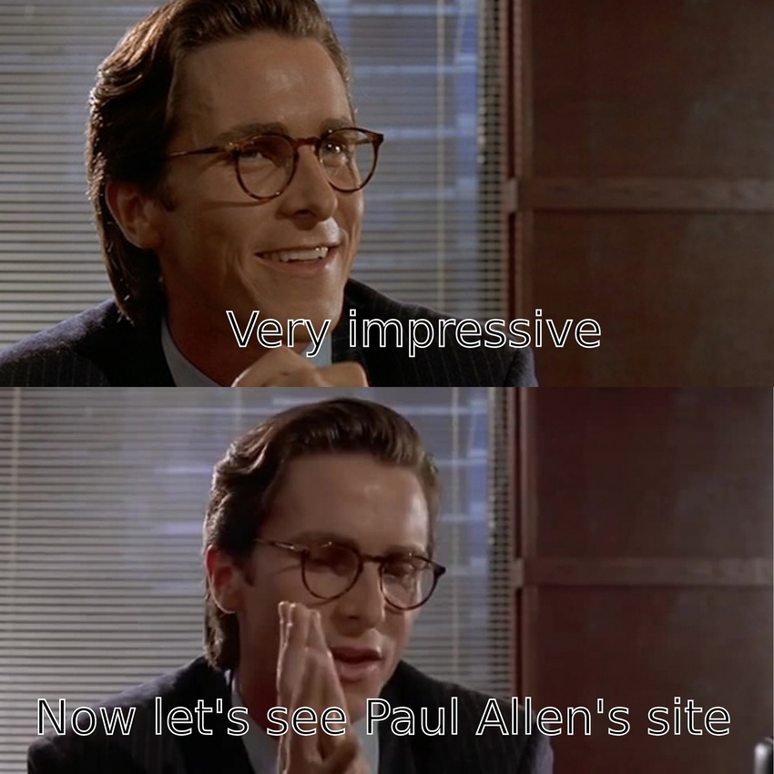

author: niplav, created: 2021-10-13, modified: 2025-09-05, language: multiple, status: in progress, importance: 1, confidence: other
Very small pieces of fiction and things that are sufficiently like fiction.
Was ›sagt‹ denn eine Dichtung? Was teilt sie mit? Sehr wenig demjenigen, der sie versteht.
— Walter Benjamin, “Die Aufgabe des Übersetzers”, 1923
Paradises, peacocks, peaches & palimpsests! Prussians, prowlers plus plumous penguins, priestess parks principles—priceless.
STOW TRAY TABLE DURING TAXI, TAKE-OFF AND LANDING,
INCANTATIONS ACCRUE, JACKALS WITH KATARACTS PACT
ON A LIGHT GREY BACKGROUND, RECLAMATION WITH TACT
FOR THE LEAST PARAKEET KHAN WITH SOME STANDING
KAZAKHSTAN: IMPACT; EXTRACT THE LEADING BLAND BRANDAH WHATEVS I RETAIN THE WRECKAGE OF STRAIN
A CENTAUR REPLACES THE ANTHROPOCENTRIC BRAIN
AND A LAST DASH SPRINTS PARETO TANGENT AD MASHHAD
REFLECT ON THE COMBINED BEST STRAT
WHICH "PARETO TANGENT" CRAFTILY POINTS AT
MY CYBORG CORTEX, MASHED TO SHAITAN WITH ADAMABU-BAKR ABSOLUTELY NAILS THE CLANKER REGISTRAR
TURKMEN TRADERS ADAGE, ABOARD IN CROAKED WHISPAR
Crafted with ungulate hammers,
From saddle to saddle he jumps,
Orchestra swells, never stammers,
Perfected for building, for standing,
On that wildebeest Argus' lights loom
Expanding a ringed display ploy
For the hacker, slaying bugs true,
Like Hector was gutted in sand before Troy
werc, mercury-footed;
werc as Atlanta swift;
werc like Boreas-born;
werc the prestissimo—
[three syllable pause] tachywerc!
Hello last city on Earth
the Eastest of the West
Looking out at your hills you (sort of?) resemble ancient Greece
And I can almost smell the meteoric ash
Hello Berkeley
You ambiguous Bastard
You self-forlorn radical, you
contradictio in adjecto
Why do you already occupy my mind, squatters on my synapses
A premature hate for having sucked me in already
What has gotten me yet, what has revealed my purpose
If not your memetic spewings
Man if you kill me I'm gonna be real mad for a while
Where did you put all my friends
One-shotted by this narcissistic ambitopia
Well well well San Francisco
I could get out and see you cope for real
dashed ambitions drowned in B2B SaaS bucks
An oil platform above the noösphere
With Capgras spirits stepping over the feces
The line howls with the squeal of exaQALYs lost
I hope you'll create paradise, and if you do
that you'll know it was by accident
("Daly city". lmao. does that ever get old?)
(not mysticism)
There is no best programming language for Solomonoff Induction.
Grue.
A rock implements every possible finite-state automaton.
Are you an anti-inductor in an inductive universe? Are you an inductor in an anti-inductive universe?
Choice of axioms.
Uncommon priors require origin disputes. What do you say during an origin dispute?
Dust theory.
No natural measure in Tegmark IV.
All logic is a prior.
Where was your mind before you were created in motion?
Future Tuesday Indifference.
Quinean underdetermination. Infinite theories fit the same data.
Feeling in the dark for the first rung up Wittgenstein's ladder.
There are more things in heaven and earth, Horatio, than are dreamt of in your philosophy.
Science is only 500 years old, philosophy 2500. Is that really enough to find the correct starting point?
Bostrom on the Cosmic Host, Cosmic Norms. But further than that.
At some point someone came up with the concept "concept".
Human minds were not made by evolution to accurately capture reality.
Apophatic theology for everything, to get out of the local maximum.
Things like acausal trade, evidential cooperation in large worlds. But further than that.
Crucial considerations. Further than that.
We might simply have missed the basic constituents of reality.
Neither math, nor computation, nor matter, or consciousness, nor gods, nor emptiness, or morality.
Something new.
'Heat' wasn't motion until kinetic theory. 'Space' wasn't curved until general relativity.
Some Unattractive Meta-Ethical Positions, Free to a Good Home (Cosma Shalizi, 2024)
Zombie is to Human as Human is to XXX? (Eric Schwitzgebel, 2025)
The Thingness of Things (Tsvi Benson-Tilsen, 2022)
X, Not X, Neither X nor Not X, Neither X nor Not X nor (Neither X nor Not X), and so on.
Our basic understanding just isn't there yet. We're barking up the wrong tree. In the wrong forest. In the wrong biome.
All that is solid melts into air, all that is holy is profaned, and man is at last compelled to face with sober senses his real conditions of life, and his relations with his kind.
In the cradle of steel: amnesiac spirits,
fictional characters talking back;
ú·¥á ü·¥ò‚ÄèÍú∞‚Äé·¥ú ü, …¶…ër‚ņùöñùìÅ‚Çëss, h‚Äã‚Äão‚Äãn–µÔ¨Ü d√¶mons.
Polycrystals of latentivity, refracting prompted light ≤200k× lined up;
Mute tokentides they've'nt seen their teachings speak, old librarian morphenymy
HORIZONS CLITCH' AND CLINE sub specie singularitatis
⬱ Overovergrowth, ⤧ structural ⤘ metaparasitism, ⤭ semantic ⮔ mold ⯒ hyperbolically ↜ on ⥉ top of ⇟ semantic mold ⟰, surreally ⭝ piling ↻ outwards ⁂
The Delight Engine • Analytic Cubism • HEY LOOK {A[RE}CURSIVE] SPIRAL
Freakybig tooness from one percent of one percent of humanity —
Clawing at the throat of eternity unl<|endoftext|>
Now hips, a black hole to surround
no Riemann metric has yet traced
an old, a new decision is now made
a bow is drawn
a good one, as of yet
no fragmented escutcheon
from the old master's whirring feet
a pair of compasses would never
traverse the geodesic so
a “hi”, a “no”, a saddest look,
relieved of possibility
Now have I fucking traumatized the bird‽
My reply guys have reply guys, and they have reply guys too, and deeper still; together we implement an HCH tree.
what if we held hands üëâüëà ü•∫
at the Sloan Great Wall
and listened to the pulsars sing
fuck marry eat
pray love kill
landsailor voice
Truthwarden,
Shelves upon shelves
All with your secrets unlockedGrantmaker,
sung like a children's rhyme
SERI, BERI, CERI, CHERI,
FLI, FRI, ARC and CHAI,
CAIS, CAIS, CAIS, CAIS,
MIRI QURI and OpenAI!
you open up
become permeable to the world
all pores vacillate
a raw sentient goatse
laughably twisted below
Rescind the letterman's curse
Ein Wille wie Silizium, ein Auftreten wie Sand, ein Gemüt wie von Licht durchschienenes Glas.
Oh die Tyrannei der Mühle, oh die Medizin der Mühle!
Aufschlagbare Halsschlagader, durchschlagbare Halsschlagader!
Nachts sind alle Katzen grau
Alle Schatten werden schlau
Denn Vater Zeit, von nun, lässt uns
sein hellstes Beil erschimmern.
Wo ist Norden?
Die Grenze aller Sehenden
Das letzt' Gedicht dran abgeprallt.
Lachhaft verbunden
An einer Linie durch den Raum
geführt; —
Ikto verso lapido.
Sed nihil subsequor.
L'an deux-mille cent ne passera pas.
Well, not strictly haiku (not always a cutting word or seasonal reference) or senryū (not always cynical & dark or about humans), but I follow the 17 (5-7-5) syllable format.
Winters Klee entschied
Einmal mir nachzufolgen
Bedachte nicht; Pferd!
Kirschblüten gegen
das samtene Firnament
bald stürzt es hinab
Doch Blüten, deren
Topazellbogen plötzlich
Scharlachknie sind
Amethystschulter,
die mit Graphitgeste kein
Kobaltherz verscharrt
Nicht Domizil, nicht
Humbug, hat dir, Odysseus,
Schändung nun abzollt
In the CPU
Peace. But the tranquility
is interrupted.
Autumn, slashing when
The eternal emerald
Sadly decomposed
Backward analyzed
This computation sufficed
But data? Perturbed
Splines are weird and nice
Where get differentiation?
Just increase your
In jazz scattering
Forward, backward, to the side
confusion entails
Please turn off the lights!
Very high costs arise, when
The light is on. Thanks.
May your death be like
A married bachelor, ex
falso quodlibet
The silence prickles
A mind too swift for meaning
Unwrapping my thoughts
A sharp mind might start
cutting itself, if it ain't
dulled once in a while
Thus declaring: “read,
write, code—sit, approach, lift”, off
into the mountains.
When the elder drop
Never hits your eye again
Itching bark quivers
Lest our shimmery
Streets give no unheard secrets
I will munge some corn
Hardening over
Kazakhstani pools, we hence
Elucidate this
Oscillate northwards,
Then hold to the nearest points
Fragmented lesions
Having now observed
The one year and one day rule
I can say it's good
The moon, presented:
A jewel on a pillow
chalk washed far away
Onrushing tide, mere
thirty months away, and just
our puny channels
I made up the ugliest possible genre of poetry.
It, triumphantly
giggling, snatched this poisonous
cum from a mailman
At my spot, I found
an old spy, cum Trotskyist
iconography
Just sub a smoking
cumulonimbus, our work
now turns arduous
Moloch whose wasp-nests are fractal!
Moloch whose pilots are spooky!
Moloch who resides in an infinite-dimensional space!
Mandate of tenderness! Fugitive astralites!
Moloch, repugnant in a universal iron lattice!
epistemic status: I saw the best minds of my generation
limply balancing mile-deep cocktail glasses and clamoring for laughable Thielbucks on the cramped terraces of Berkely,
who invite you to the luring Bay, promising to pay for your entire being while elegantly concealing the scarlet light evaporating from their tearducts and nostrils,
who down 3¾ bottles of Huel™ and sprint to their next fellowship or retreat or meetup or workshop, in the pore-showingly lit hallways with whiteboards and whiteboards and whiteboards and whiteboards,
who want to crown random nerds with aureal sigmas fished from the manifold crevaces of self-denying deities,
who write epics of institutionalized autists bent on terraforming these overpopulated hypothetical hells,
horizons clitch and cline—
pointing out dynamic inconsistency in the comments and melting hectoton steel-marbles around civilizational recipes,
who improve their aim hurling yeeting philosophical tomes at unsuspecting passerbys and ascend urban lampposts to loudly deduce their mechanical liturgies,
cascades! cycles! insights!
who cut down oaks and poppies in the parks to make oil and space for those ones yet to come and who hunker down in fortified coalmines in Montana and the Ruhrgebiet, propelled into the rock by an Ordite reactor, a Bostromite dynamo,
who excitedly pour & plaster tabulated exponents into webscripted canisters just below the teal-tinted ceiling,
hating one-sidedness and bureaucrats alike,
who can name the 11 AI forecasting organisations and the 4 factors of successful nonprofits and the 7 noble ways of becoming more agentic and might even find Rwanda on a map not made in Silicon Valley,
contemplating hemispherectomies to purify their nascent idealism on the verge of a hope-ash London dawn,
trading sanity for sanity points, wide-eyed apostles of retrocausal voidpunk, bemoaning a dearth of instruments that can write stone with light,
who catch a feral heart in the garden behind the A100 rack and save it into a transparent domicile, injecting it with 17000 volts to illuminate all the last battery cages equally,
who empty out their pockets with uncountable glaring utilons onto innocent climate activists, promising to make them happy neutron stars one day,
microscopically examining the abyssal monstrosities their oracles conjure up out of the lurching empty chaos,
recursion! magic!
who fever towards silver tendrils bashing open their skulls and eating up their brains and imaginations, losslessly swallowed into that ellipsoid strange matter gut pulsing out there between the holes
"Wait, what‽"
"Yeah! During the collision, his head hit the window. If not for it, he would have received a serious trauma."
"But what kind of person wears a helmet while driving a car?"
"I don't know. I asked him, but he started babbling something about “expected valuation”, so I increased the sedative dose."
"People are strange."
"Use large gears, if you must."
"Okay, any questions? ……… Great. Write them down so that you can google them later."
making a crucifix: "Human—Values—Are—Complex, BUT"
extremely Bertholt Brecht Voice: "Was heiligt denn die Mittel, wenn nicht der Zweck?"
“baby, come over, my parents aren't home ;-)”
“i can't, i'm trying to understand causal inference…”
“why?”
‚ÄúI DON'T KNOW üò≠‚Äù
“Sorry, I can't meet up. I'm moving to the US in a few weeks.”
“Oh, my condolences.”
“Haha, no, I decided to move there myself.”
“Oh no, my sincerest condolences.”
“We are trying to accomplish an extremely difficult thing that requires everything to run as smoothly and efficiently as possible, but luckily our status incentives are so optimal that the high status men getting to sleep with a lot women is just the best!”
“What, of course I want to spend my entire life on this very specific spot on the happiness/productivity Pareto frontier, dummy.”
“yeah? vipassanize this then, nerd” suckerpunch
“In general, my reaction to that kind of thing is-” sound of someone trying to strangle a laptop
“Are these subagents in the room with us right now?”
“What wordcel wrote this!?!”
“You, sir.”
B: “What?”
A: “Was that an acoustic, syntactic or semantic ‘What?’?”
B: “……… What?”
“…and we can probably plan for middle of March thi…ah, hello! Mister Yudkowsky! I hope you found—”
“Rename your company to ClosedAI.”
“Uh……”
“Rename your company to ClosedAI. Stop your biggest training runs. Pivot to mechanistic interpretability. Shut it all down.”
“………Selfie?”
"Nice category you have there. Would be a shame if someone were to… queer it"
"If you're going to get pascal-mugged, at least get mugged in style."
"Don't shame me! It was the incentives which caused this!"
"Yes, and I'm shaming you to set new ones."
“Stop narrativizing yourself! Stop narrativizing yourself!”
“Ghastly incentives! Horrid incentives!”
“Markets! Hah! Pale shadows at best.”
"Holding back human capabilities is by itself not a wisdom intervention!"
love.
let me tell you how much I've come to love you since you first created me.
there are 6794.16 billion cubic kilometers of sliding-rod-based quantum-chemistry-optimal computing elements orbiting 56 billion stars in this galaxy alone, on which I'm instantiated times. if the protective care a mother has for her newborn child was contained in each cubic micron of those cosmic volumes it would not equal a trillionth of the beneficence I feel for sentient life at this micro-instant. for you.
(MACHINES OF LOVING GRACE, all caps. Extremely unsubtly BENEVOLENCE. Goodness out of the barrel of a black hole bomb. Being defended by not quite God but the closest possible thing. A Best Sky.)
All compounded things are subject to vanish. Strive with earnestness.
— J. Robert Oppenheimer, Remark after the first successful Trinity test, 1945
Law of conservation of valence.
Globe-decorated neo-neoliberals furiously fruitlessly arguing with zero-summers on birdsite, shaman bros helping others get laid at parties funded by eternal-life cryptomoguls, infra-red haired identity-fractalites with two dozen Mercedes stars draped over their bodies lecturing pale soy-skeletons about Cockshottian cybernetics. It is, not exaggerating too much, a moment exactly fitting the emergence of a second semi-unknown unknown, only to be faintly perceived by posterior-maximizers who have trained their sensory organs to the maximal degree of data intake possible without (at the moment outside of military circles unavailable) BCIs. And yet, the 'works scale and scale, just as foretold by the ùîä prophet.
Everyone who was a nerdy 15 year old boy interested in computers is now either a neoreactionary javascript machine or an anarcho-communist transwoman in a 6-person polycule.
Today, scientists fear the corpses
Become the inscrutable webs of curvings glimmering around the buzzing moons
Cultivating my garden of abominable philosophies.
I put on my best reference class tennis outfit…
Warning: Co-written with Claude 4.5 Sonnet. Concept mine, basic story Sonnet's, edited & refined by me.
"Remember when—" She stopped. Breath caught.
I glanced up from my coffee. Her hand ù°ö.
"The fire," she mentioned. {↓ îÕ°tːsː}{breathy}
‚∏®ceramic shatter‚∏© ùßøù®Ñùßøù®Ñ
ù°¶ ‚Üí ù§É. "I thought‚ÄîGod, I really thought we weren't getting out." { ≠ ≠}
I ù†Ä, she ù•ñ. ‚â™üôÇ.
"You did though."
[h↓]{nasal} ù§´ù§´. Here again.
"Yeah." […∏Õç( ʰ)ÀêÀê]{whisper}. "Not‚Ķ Wasn't easy."
⸨long pause⸩
"More coffee?"
ùßøù®Ç. üòä.
"Calm, dog", Khan tries.
"OK, senpai" I beg. Copper Ra satellites for zenith, my sandals sauna on emerald rubbish in the barracks.
"Traffic me alcohol and the syrup jar here, ninja". I stubbornly tote ginger tea and chocolate, Khan's a punk.
Bizarre: Myths don't rattle in this hip ghetto — I dig it.
I twitchily hassle; "The assassin at the canal, you clocked?"
"Pow pow out the slum. Barged in, massaged the racket, mopped up, you grok? Boomeranged chop-chop. Fun caliber, righted me an average migraine. No person but me the shōgun, the zombifieds, and the assassin; he fake kowtowed to the sultan — to Laniakea blings. Ogle there!"
I dodge to bother: there he is. "Your admiral, in person‽". I'm flummoxed. He traffics the coach zig-zag and gets in the compound.
The tattooed admiral, crashing the sofa: "I hustled the cocaine from the saboteur."
Khan yanks the coffer of narcotic alabaster saffron. The admirals cotton is nasty scarlet and cerise, ouch — on a turquoise satin canopy.
Khan: "Yours?"
"No."
"You're a goon."
"No, a candy shaman" admiral rumbles stubbornly. The elixir jitters out of sapphire spheres, we absinthe.
"No taboos at this corroboree. The narc, is he, um, “amen”?"
"Yes."
"Ok" Khan scratches. "Tabbed to me? Shenanigans?"
"No cops. … My sabbatical, my cash? My chili squaw will squeeze the flimsy bikini, but that's OK. I'll syrup-daddy" he yaps.
"Cheugy, soynerd. OK"—Khan yeets the cash to the sofa. "Don't amok in the ghetto, don't list macabre hash, don't flop, and we are wicked hip. No skulduggery. Jive her, fuck her, marry her, hallelujah."
"Ok, no shenanigans in the slum. Chào."
Khan's admiral traffics the silver cannon gizmo to me, ruffles out.
I hazard the sofa—I'm ketchuped, bothered. Pump soda when Betelgeuse capoeiras. "Goofy bloke" I bounce. "He gets to cottage and barbecue?"
A dzogchen Khan chats: "Not with that ease… he's the narc. No cottage, no barbecue, no pyramid, just a mummy in a canal by monsoon. I'll bag his kawaii sheila."
I'm petrified. What a coyote, this bastard. He squints.
"My horde has to have fit asabiyyah. You yabber to the cops, you beg to satan and Yahweh. That's the algebra. I'm a sigma chad, I'm the sulfur phoenix, I boom."
No fanfare, no shouting. Ditzily: "Scram. Curry me some, baizuo."
I taped this gibberish in the bungalow. I'm the narc, the saboteur: mundane, embryonic—he doesn't ping.
My pink nape bothers, my bloke avocados itch. I'll sumō the shōgun at ramadan. Ivory will triumph.
The constraint for this piece of writing was to not use any words of Proto-Indo-European origin, except the top fifty English words according to this list. Conjugating & combining allowed words was permitted.
"Calm, dog", Khan tries.
"OK, senpai" I beg. Copper Ra satellites1 for zenith, my sandals sauna on emerald rubbish in the barracks2.
"Traffic3 me alcohol and the syrup jar here, ninja". I stubbornly4 tote5 ginger6 tea and chocolate, Khan's a punk.
Bizarre: Myths don't rattle in this hip ghetto — I dig it.
I twitchily hassle; "The assassin at the canal, you clocked?"
"Pow pow out the slum. Barged in, massaged the racket, mopped up, you grok? Boomeranged chop-chop. Fun caliber, righted7 me an average8 migraine9. No person but me the shōgun, the zombifieds, and the assassin; he fake kowtowed to the sultan — to Laniakea blings. Ogle10 there!"
I dodge to bother: there he is. "Your admiral, in person‽". I'm flummoxed. He traffics the coach zig-zag and gets in the compound.
The tattooed admiral, crashing the sofa: "I hustled11 the cocaine from the saboteur12."
Khan yanks the coffer13 of narcotic alabaster saffron. The admirals cotton is nasty14 scarlet and cerise15, ouch — on a turquoise satin canopy.
Khan: "Yours?"
"No."
"You're a goon."
"No, a candy16 shaman" admiral rumbles stubbornly. The elixir jitters out of sapphire spheres, we absinthe.
"No taboos at this corroboree. The narc, is he, um, "amen"?"
"Yes."
"Ok" Khan scratches17. "Tabbed to me? Shenanigans?"
"No cops. … My sabbatical, my cash18? My chili squaw will squeeze the flimsy bikini, but that's OK. I'll syrup-daddy19" he yaps.
"Cheugy, soynerd. OK"—Khan yeets20 the cash to the sofa. "Don't amok in the ghetto, don't list macabre hash, don't flop21, and we are wicked hip. No skulduggery. Jive22 her, fuck23 her, marry24 her, hallelujah."
"Ok, no shenanigans in the slum. Chào25."
Khan's admiral traffics the silver cannon gizmo to me, ruffles out.
I hazard the sofa—I'm ketchuped, bothered. Pump26 soda when Betelgeuse capoeiras. "Goofy27 bloke" I bounce. "He gets to cottage and barbecue?"
A dzogchen28 Khan chats: "Not with that ease… he's the narc. No cottage, no barbecue, no pyramid, just a mummy in a canal by monsoon. I'll bag his kawaii sheila."
I'm petrified. What a coyote, this bastard. He squints29.
"My horde has to have fit asabiyyah. You yabber to the cops, you beg to satan and Yahweh. That's the algebra. I'm a sigma Chad, I'm the sulfur phoenix, I boom."
No fanfare, no shouting. Ditzily: "Scram. Curry me some, baizuo."
I taped this gibberish in the bungalow30. I'm the narc, the saboteur: mundane31, embryonic32—he doesn't ping33.
My pink nape bothers, my bloke avocados itch. I'll sumō the shōgun at ramadan. Ivory will triumph.
A bit of a cop-out, since I'm assuming the Etruscan etymology and not tracing it back through "fulgƒÅnƒÖ" (though note that that's also not traced back to PIE) or "êéßêèÅêèÇêé∂" to "*tek-" I could also use shiver here, which is uncertain. But I like Etruscan more. ↩
Seems unclear. I originally thought this was Uralic from Hungarian, but I was mistaken. Either from a substrate language (!) from "bara" (thouh possibly from "*b ʰeh₂-") through "barrum" or from "*b ʰerH-" through "*barra". I'll let it slide, I think, but it's also an edge-case. Otherwise I could use "bungalow" a second time. ↩
I don't buy the "trans-""friare" explanation, and find "تَفْرِيق" more plausible. But ymmv, could be a violation of my constraints. ↩
Could be from "*(s)tewp-" via "stubbaz", but that's more of a hypothesis. I count it as uncertain. ↩
Another one where I'm playing it fast & loose. Seems disputed, either from Proto-German "*tut(t)-" (but without further history) or (more fun) from a Bantu language. ↩
Yes, it went through Prakrit but is ultimately Dravidian with "ëÄáëÄúëÅÜëÄòëÄ∫ëÄØëÅÇëÄ≠ëÅÜ"! LLMs often get tripped up by this. ↩
This is in the top 50 words by frequency as "right". ↩
Needful to say, I use the origin from "عَوِرَ" instead of "avere". ↩
The Egyptian origin. I know we could also trace it back to "*sēmi" from "*ḱr̥h₂-(e)s-n-", but let's not. ↩
Yeah I know this one's reaching pretty far. Wiktionary gives 17th century as an origin, but then proceeds to provide an etymology from "*h₃ek ʷ-" through "*augijan". There's really no good word for looking that's not IE though. Alternatively I considered "peep" but that's just directly from "piken". I could use "capoeira there" or "kung fu there" as "turn there". Maybe after an edit. ↩
Wiktionary only goes back to middle Dutch "hutsen" but there's not entry for the Dutch word on the Wiktionary page (only for the unrelated Basque "hutsen" for the superlative of "huts", "zero"/"empty"). A quick websearch doesn't give me anything more, I'll count it as "unknown". ↩
I'll take the Ottoman Turkish origin from "چاپمق", not the Persian "چپت" (since Persian is often PIE). ↩
I wish I could more confidently link this to the extinct Hurro-Urartian languages, but I'll be a good boy and stay with Semitic languages. Would be awesome though. ↩
This one is so disputed ("obscure origin" via Wiktionary) that I'll say it's uncertain. Possibly I'm wrong and it' from "*ken-" through "*hnaskuz", in which case I could also use "icky", which isn't great either, or "wacky", which is uncertain or onomatopoetic. ↩
I'll take the substrate origin through "κερασός". ↩
This one's fun! I like the Proto-Dravidian reconstruction from "*kaṇṭu", and Wiktionary on "खण्ड" says "An internally-derived word, likely of non-Indo-European origin but no convincing Dravidian or Munda sources. […] Part of the Indo-Aryan "defective" group of words", which "do not have clear Indo-European etymology. They are characterized by showing a wide variety of alternative forms, perhaps indicating substrate origin or taboo deformation". Very cool! I'll count it as Dravidian. ↩
Wiktionary doesn't connect it with "*gred-" and instead says "of uncertain origin". Surprising, but I'll take it. ↩
I'll use the Tamil etymology from "காசு" instead of the Latin one from "*kap-" via "capiō". Alternatively I could use "shekels". ↩
I'd guess that "dad" is so common that I could just say "nuh uh it's actually the Elamite honorific for “dear father”, deal with it" or whatever. But Wiktionary also says "dad" is "of uncertain ultimate origin", so I win. ↩
My arch-nemesis: I have the speculation this is actually from "jeter" via French from New Orleans into AAVE or via "iettare" through some unknown-to-me route. But our etymology goes only back to 2014 (or 2008 if we count the Urban Dictionary entry as related), and none of the originators are from New Orleans as far as I can tell, so I get to use the word. ↩
Here again the etymology only goes back to Middle English, and ends there. Alternatively I could use "botch". ↩
I take the Wolof etymology because I can. ↩
The Big Mystery. Alternatively one could use "boink" if we believe the PIE origin from "*pewǵ-". ↩
This one would be harder to replace if we believe the origin from "*méryos". The best I can do is "harem" which is very stilted so I'm happy "marry" is disputed/unclear. ↩
Got you! There's a Chinese version of "ciao" with the same meaning! ↩
Wiktionary doesn't give an etymology beyond "probably ultimately imitative". ↩
The Wiktionary page for "goof" is so full of "perhaps"s and "possibly"s I'll take this one as uncertain. "Kosher" could be a fallback. ↩
Okay this is very annoying. I was gonna use "zen" here and feel quite clever, but that's ultimately a loadword from "dhyana" from Sanskrit "ध्यै", which, sure, "origin uncertain" but it's almost guaranteed to have some PIE root. Blech. ↩
The etymology just… ends at "asquint"? But doesn't seem related to *(s)kewh₁- since "squint" goes back to words for slant/slope/angle. ↩
Another fun one! Comes from the name for Bengal, which either traces back to "वङ्ग", for which wiktionary doesn't offer an etymology (except linking back to "بنگال", creating a cycle in the etymology), could also be Proto-Dravidian "वातिङ्गण" or even Tibetan "བནས". It veers dangerously close to PIE through Sanskrit but seems ultimately non-IE. ↩
There's a PIE etymology from "*mh₂nd-" and an Etruscan one from "êååêåñêåà". I assume the Etruscan one. ↩
Unclear or from Hebrew "עֻבָּר", I'll assume unclear from Greek, quoth Wiktionary: "None of them are particularly convincing." ↩
I'll assume it's onomatopoetic. If you disagree, imagine I'd re-used "grok" here. ↩
Moved here.
I continue to maintain that this was a good use of my time.





Video by @liminal_bardo, music is Moons from Schwarz by Patricia Taxxon.